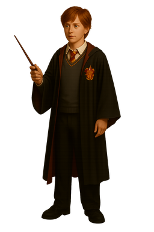

Ron Weasley
Back to Hogwarts "Wow!" Ron sighed, as the Firebolt turned slowly on the spot. "Who sent it to you?"
"No idea," said Harry. "There wasn’t a card or anything with it."
To his great surprise, Ron grinned.
"Well, who cares?" he said. "Look at it! This is the best broom I’ve ever seen in my life!"
Later, whem Profesor McGonagall takes
"Are you mad?" said Ron. "Why would anyone put a curse on a broom? It’s not like they need to attack you during a match."
And when Hermione tells McGonagall:
"That’s the second time she’s done it!" Ron told Harry furiously. "Squealed on you. And you thought she was your friend!"
Personality of Ron Weasley
Introduction
Ronald Bilius Weasley, or Ron Weasley, is a character who embodies warmth, loyalty, and complexity. As a key figure in the wizarding world, he represents the essence of a true friend and a deeply human companion. His personality is shaped by his upbringing, his relationships, and his inner battles with insecurity and courage. Ron’s character resonates with readers because of his relatability and growth, making him one of the most endearing figures in magical literature.Loyalty and Friendship
Ron’s loyalty is one of his most prominent traits. From the moment he forms close bonds, he dedicates himself wholeheartedly to his friends. His commitment goes beyond words — he consistently demonstrates his devotion through actions, standing beside his companions in times of danger, uncertainty, and hardship. What makes his loyalty so powerful is that it is not perfect or effortless. Ron struggles at times with envy, fear, or doubt, but he always returns to his core value of standing by those he cares about. This unwavering support makes him the kind of friend everyone hopes to have.Ron’s friendships are marked by sincerity and depth. He offers his friends laughter, comfort, and protection. His sense of humor often lightens tense moments, while his willingness to defend those he loves reveals his courage. Ron’s relationships are not without challenges, but his ability to forgive, reconcile, and put others first highlights the strength of his character.
Humor and Lightheartedness
Ron’s personality is infused with humor. He uses wit and playful teasing as a way to connect with others and ease the burdens of difficult times. His sense of humor is sometimes mischievous and sometimes self-deprecating, reflecting his ability to laugh at himself and at the absurdities of life. This lightheartedness serves as a balm for his friends during stressful situations, reminding them that joy can be found even in dark moments.His humor also reveals his intelligence in subtle ways. While he may not always be the most academically inclined, Ron’s quick thinking in social situations and his ability to diffuse tension with a joke showcase a form of emotional intelligence that is often overlooked. His light-hearted nature makes him approachable and helps forge strong connections with others.
Courage and Bravery
Courage is another cornerstone of Ron’s personality. He is not fearless — in fact, Ron often confronts situations that terrify him. Yet, it is precisely because he experiences fear that his bravery shines all the brighter. Ron repeatedly faces danger head-on, motivated by his desire to protect his friends and uphold what he believes is right. His courage is quiet and steady, not driven by glory or recognition, but by duty and love.What sets Ron’s bravery apart is that it comes with vulnerability. He does not pretend to be invincible. Instead, he acknowledges his fears and insecurities and pushes through them. This makes his acts of heroism all the more meaningful, as they come from a place of genuine selflessness rather than a need for attention or admiration.
Insecurity and Self-Doubt
Despite his many strengths, Ron often struggles with feelings of insecurity. Growing up in a large family, he sometimes feels overshadowed by his siblings or his more accomplished friends. This sense of inadequacy can cause him to doubt his worth or to compare himself unfavorably to others. At times, these insecurities manifest as jealousy or frustration, creating moments of tension in his relationships.However, Ron’s self-doubt also contributes to his depth as a character. His journey is one of overcoming these internal struggles and learning to recognize his own value. As he matures, he becomes more confident in his abilities and more secure in his role within his circle of friends. His path serves as a reminder that true strength often comes from facing and conquering one’s inner demons.
Kindness and Compassion
Ron’s kindness is evident in the way he treats those around him. He shows empathy toward others, particularly those who are vulnerable or marginalized. Whether offering comfort to a friend in distress or standing up for someone being mistreated, Ron’s compassion shines through his actions. His generosity extends beyond material things; he gives his time, his attention, and his heart to those who need it most.This compassion also makes Ron sensitive to the feelings of others. He tries, sometimes awkwardly, to support his friends emotionally, even when he does not fully understand what they are going through. His efforts to be there for others reflect his desire to create a sense of belonging and safety in his relationships.
Sense of Justice
Ron possesses a strong sense of justice. He dislikes unfairness and is quick to speak out when he witnesses wrongdoing. His moral compass guides many of his decisions, and he is willing to take risks to stand up for what he believes is right. This sense of justice often drives him to challenge authority when necessary and to protect those who cannot defend themselves.His desire for fairness also influences the way he views the world. Ron dreams of a world where kindness and decency prevail, and he does what he can to contribute to that vision. While he may not always have the right words, his actions reflect his commitment to creating a better, more just world.
Jealousy and Flaws
Like any well-rounded character, Ron is not without his flaws. One of the most recurring is his tendency toward jealousy. He sometimes struggles with envy, especially when he feels overlooked or underappreciated. These moments of jealousy can lead to misunderstandings and conflicts with those closest to him.However, what makes Ron’s flaws compelling is the way he confronts them. He is capable of self-reflection and growth. He recognizes when his feelings have led him astray and works to make amends. His ability to admit fault and strive for betterment underscores the strength of his character and his commitment to the people he loves.
Growth and Maturity
Over time, Ron’s personality evolves significantly. He matures from a boy who is uncertain of his place in the world to a man who understands his worth. His journey is marked by personal victories over insecurity, fear, and self-doubt. As he gains confidence, he becomes more comfortable in his own skin and more willing to embrace leadership and responsibility.This growth does not happen overnight. It is the result of many experiences that test his character and challenge his assumptions. His path toward maturity highlights the importance of perseverance, reflection, and the support of loved ones in becoming the best version of oneself.
Resilience
Resilience is another key trait of Ron’s personality. Despite facing numerous setbacks, dangers, and emotional trials, Ron continually rises to meet the challenges before him. His ability to recover from disappointment and hardship is a testament to his inner strength. Even when circumstances seem bleak, Ron’s determination and hope keep him moving forward.His resilience also inspires those around him. By refusing to give in to despair or defeat, Ron encourages his friends to do the same. He becomes a source of stability during difficult times, reminding others that together they can overcome any obstacle.
Conclusion
Ron Weasley’s personality is rich and multi-faceted. He is loyal, funny, brave, kind, flawed, and deeply human. His struggles with insecurity and jealousy make him relatable, while his acts of courage and kindness make him admirable. Ron’s journey is one of growth and self-discovery, and through it all, he remains a true friend and a person of great heart. His character reminds us that being a hero does not mean being perfect — it means striving to do what is right, even when it is difficult. Ron’s warmth, humor, and steadfastness continue to inspire and resonate with those who encounter his story.Back to Top